컴퓨터활용능력-1급 (2008-10-12 기출문제)
1과목: 컴퓨터 일반
1. 다음 중 Windows XP의 부팅 과정을 순서대로 옳게 나열한 것은 무엇인가?
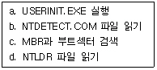
- a - b - c - d
- c - d - b - a
- d - a - c - b
- d - c - b - a
(정답률: 44%)

2. 다음 중 웹 프로그래밍 개발에 사용되는 JSP에 대한 설명으로 가장 옳지 않은 것은?
- 자바로 만들어진 서버 스크립트이다.
- 데이터베이스 연결이 쉽다.
- 윈도우즈 계열에서만 실행이 가능하다.
- HTML 문서 내에 <% …%> 와 같은 형태로 작성된다.
(정답률: 74%)
3. 다음 그림은 디스플레이 등록 정보 창에서 [설정]의 속성을 나타내고 있다. 다음 중 그림에 설명으로 옳지 않은 것은?(문제오류로 2, 3번이 정답 처리된 문제입니다. 여기서는 2번을 정답 처리 합니다.)
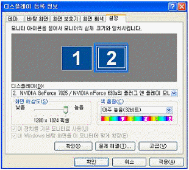
- 이 디스플레이 장치에 사용된 비디오카드는 듀얼 모니터를 제공할 수 있는 어댑터가 장착되어 있다.
- 두 개 모니터 중 모니터 1은 기본 모니터로 설정되어 있다.
- 모니터 1과 모니터 2는 같은 바탕 화면을 보여준다.
- 모니터 2번 바탕화면은 1280 × 1024 픽셀 크기에 맞게 표시되도록 설정되어 있다.
(정답률: 83%)
4. 다음 중 Windows가 시작할 때 나오는 음악 소리를 변경하는 방법으로 가장 옳지 않은 것은?
- Windows에서 제공하는 음악 이외에 자신이 좋아하는 다른 음악이 나오도록 설정할 수 있다.
- 로그인 사용자마다 각기 다른 음악이 나오도록 설정할 수 있다.
- 원하는 음악 파일을 Windows 폴더 안에 system폴더에 Startup.wav파일로 저장해 놓으면 된다.
- [제어판]-[사운드 및 오디오 장치]-[소리] 탭에서 ‘Windows 시작’을 선택하여 ‘소리(S)’에서 새로운 음악 파일을 지정한다.
(정답률: 47%)
5. 다음 중 한글 Windows XP에서 시스템의 성능을 최적화하는 방법에 대한 설명으로 가장 옳지 않은 것은?
- ‘디스크 정리’를 실행하여 사용하지 않는 선택적 Windows 구성요소c120081012를 제거하여 디스크 공간을 늘릴 수 있다.
- ‘드라이브를 압축하여 디스크 공간절약’을 설정하면 디스크의 접근속도와 디스크의 안정성이 높아진다.
- ‘디스크 조각 모음’을 실행하여 파일이 여러 곳에 분산되어 기록된 파일을 한 곳에 모아 기록해주어 디스크의 접근 속도가 빨라진다.
- ‘시각 효과’는 그래픽 카드의 성능이 낮은 경우에 컴퓨터 전체의 성능을 떨어뜨리는 요인이 될 수 있으므로 ‘사용자 지정’ 항목을 선택하여 성능을 저하시키는 일부 옵션을 해제하면 된다.
(정답률: 37%)
6. 다음은 외부로부터의 데이터 침입행위에 관한 유형이다. 다음 중 가로채기(interception)에 관한 설명으로 옳은 것은?
- 자료가 수신측으로 전달되는 것을 방해하는 행위
- 전송한 자료가 수신지로 가는 도중에 몰래 보거나 도청하는 행위
- 원래의 자료를 다른 내용으로 바꾸는 행위
- 자료가 다른 송신자로부터 전송된 것처럼 꾸미는 행위
(정답률: 55%)
7. TCP/IP 프로토콜의 설정에 있어 서브넷 마스크(Subnet Mask)의 역할은?
- 도메인 명을 IP주소로 변환해 주는 서버를 지정
- 네트워크 ID 부분과 호스트 ID 부분을 구별
- 호스트의 수를 식별
- 사용자의 수를 식별
(정답률: 67%)
8. 다음 중 음성 데이터를 인터넷 프로토콜 데이터 패킷으로 변환하여 인터넷 망을 이용하여 음성 통화를 가능하게 하는 기술로 가장 적절한 것은?
- ISDN
- ADSL
- VDSL
- VoIP
(정답률: 82%)
9. 영상부분은 MPEG4를, 음성부분은 MP3를 채택하여 재조합한 것으로 비표준 동영상 파일 형식이지만 수백 메가에서 기가대의 영화를 압축한 DVD 수준의 고화질 파일을 의미하는 것은?
- ASF
- AVI
- DivX
- MSDB
(정답률: 51%)
10. 캐시메모리(Cache Memory)에 대한 설명 중 가장 옳지 않은 것은?
- 컴퓨터의 CPU 내부에 있는 고속 액세스가 가능한 기억 장치이다.
- 캐시메모리는 DRAM보다 접근 속도가 빠른 SRAM 등이 사용되며 주기억장치보다 소용량으로 구성된다.
- 속도가 빠른 중앙처리장치와 상대적으로 속도가 느린 주기억장치 사이의 병목 현상을 해결하기 위하여 사용한다.
- 적중률(Hit Ratio)가 낮을 때 시스템의 전체적인 속도가 향상된다.
(정답률: 68%)
11. 다음 중 TCP/IP 구성 내역을 테스트하는 방법에 대한 설명으로 가장 옳지 않은 것은?
- msconfig 명령을 이용하여 TCP/IP 설정 사항을 살펴 본다.
- ping 127.0.0.1을 입력하여 루프백 주소를 ping해 본다.
- 기본 게이트웨이의 IP 주소를 ping해 본다.
- DNS 서버의 IP 주소를 ping해 본다.
(정답률: 42%)
12. 컴퓨터 메인보드에 들어있는 내장 전지(internal battery)는 컴퓨터의 전원공급장치와는 다른 기능을 한다. 이 전지의 기능에 대한 설명으로 가장 옳지 않은 것은?
- 바이오스가 기록된 CMOS SRAM에 전력을 공급한다.
- 전지가 수명을 다하여 전력을 공급하지 못하면 CPU와 RAM이 작동하지 않으므로 전지를 교체해 준다.
- 니켈 카드뮴(Nickel-Cadmium) 전지를 사용하는 충전식 전지는 컴퓨터를 오래 사용하지 않을 경우 CMOS에 저장된 바이오스 정보가 사라질 수 있다.
- 전원공급장치의 동작과 상관없이 RTC(Real Time Clock)장치에 전원을 공급하여 날짜와 시간을 알려준다.
(정답률: 39%)
13. 다음 중 USB 컨트롤러에 대한 설명으로 옳지 않은 것은?
- 플러그 앤 플레이 설치를 지원하는 외부 버스이다.
- 컴퓨터를 종료하거나 다시 시작하지 않아도 USB 장치를 연결하거나 연결을 끊을 수 있다.
- 단일 USB 포트를 사용하여 스피커, 전화, CD-ROM 드라이브, 스캐너 등 주변 기기를 연결할 수 있다.
- 전용 병렬 버스 장치를 연결할 수 있도록 해 주는 컴퓨터 인터페이스이다.
(정답률: 73%)
14. 운영체제가 응용 프로그램의 상태에 의존하지 않고 강제로 작업을 변경함으로써 하나의 응용 프로그램에 문제가 발생해도 다른 응용프로그램에 영향을 주지 않도록 하는 제어 방식을 무엇이라 하는가?
- 비선점형 멀티태스킹
- 선점형 멀티태스킹
- 플러그 앤 플레이
- 멀티 프로그래밍
(정답률: 44%)
15. 다음 중 무선 접속을 통해 PDA나 휴대전화 같은 이동 단말기에 웹 페이지의 텍스트 부분이 표시될 수 있도록 해 주는 언어는?
- VRML
- WML
- PHP
- Perl
(정답률: 56%)
16. 다음 중 MPEG(Moving Picture Experts Group)에 대한 설명으로 가장 옳지 못한 것은?
- MPEG는 시간에 따라 연속적으로 변화하는 동영상 압축에 관하여 연구하는 그룹의 이름이다.
- MPEG 종류는 MPEG-1, MPEG-2, MPEG-4, MPEG-7, MPEG-21 등이 있다.
- MPEG는 손실/무손실 압축 기법 중 무손실 압축 기법을 주로 사용한다.
- MPEG에서는 정지영상 압축 기술인 JPEG 기술을 사용한다.
(정답률: 43%)
17. 다음 중 호스트의 IP 주소를 호스트와 연결된 네트워크 접속장치의 물리적 주소로 번역해 주는 프로토콜은?
- DNS
- ARP
- ICMP
- RARP
(정답률: 38%)
18. 다음 중 컴퓨터 처리에서 중심적인 처리를 행하는 프로그램의 조건에 맞추기 위한 사전 처리나 사전 준비적인 계산 또는 편성을 행하는 프로그램으로 매크로 확장, 기호 변환 등의 작업을 수행하는 것으로 옳은 것은?
- 컴파일러(Compiler)
- 프리프로세서(Preprocessor)
- 어셈블러(Assembler)
- 인터프리터(Interpreter)
(정답률: 47%)
19. 다음 중 아날로그 신호와 디지털 신호에 대한 설명으로 옳지 않은 것은?
- 범용컴퓨터는 아날로그 신호를 취급하기 때문에 정밀도가 제한적이다.
- 아날로그 신호는 시간에 따라 크기가 연속적으로 변하는 정보를 말한다.
- 디지털 신호는 시간에 따라 이산적으로 변하는 정보를 말한다.
- 디지털화된 신호는 복호화(decode) 과정을 통해 원래의 아날로그 신호로 변환된다.
(정답률: 54%)
20. IPv6 주소 체계는 16진수 숫자로 표시되는 여러 개의 섹션들과 각 섹션간 구분은 콜론(:)으로 주소를 표현한다. 다음 중 각 섹션을 구성하는 비트 수에 해당하는 것은?
- 4비트
- 8비트
- 16비트
- 32비트
(정답률: 47%)
2과목: 스프레드시트 일반
21. 다음 중 [A1] 셀에 =SUMPRODUCT({1,2;3,1},{1,2;3,1})로 수식을 입력하고 <Enter> 키를 눌렀을 때의 결과 값으로 옳은 것은?
- 24
- 70
- 36
- 15
(정답률: 51%)
22. 다음 중 매크로에 대한 설명으로 옳지 않은 것은?
- 매크로를 기록한 후에는 Visual Basic Editor를 사용하여 오류를 고치거나 매크로 내용을 변경할 수 없다.
- 매크로 기록을 시작하면 사용자가 일련의 명령을 수행함에 따라 각 단계에 대한 정보가 저장되며, 저장된 매크로를 실행하면 해당 명령들을 다시 수행할 수 있다.
- 매크로를 사용하면 Microsoft Excel에서 자주 수행하는 작업을 자동화할 수 있으며, 매크로는 해당 작업이 필요할 때마다 실행할 수 있도록 일련의 명령과 함수를 Microsoft Visual Basic 모듈로 저장해 놓은 것이다.
- 매크로 이름의 첫 글자는 반드시 문자이어야 하며 나머지는 문자, 숫자, 밑줄 등을 사용할 수 있으며, 공백을 사용할 수 없고 밑줄로 단어를 구분할 수 있다.
(정답률: 57%)
23. 1부터 입력된 수까지의 곱을 구하는 폼 화면과 프로그램이다. [결과보기] 명령단추를 누르면 그 결과가 아래의 Label에 출력된다. 아래의 프로그램 코드로 실행했더니 결과가 ‘1’로 표시되었다. 그 원인이 되는 문장은 어느 것인가? 단, 3을 입력한 Textbox의 이름은 Textbox1, [결과보기] 명령단추 이름은 CommandButton1, 결과가 표시되는 Label의 이름은 Label3이다.
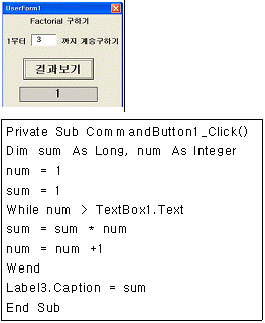
- While num > TextBox1.Text
- sum = sum * num
- num = num +1
- Label3.Caption = sum
(정답률: 39%)
24. 다음 시트에서 [A2:A7] 영역의 이름이 ‘대표’로 정의되었을 때 [A8] 영역에 =MATCH("김영희",대표,0) 수식을 입력하였을 때 결과 값은?
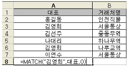
- 서울통상
- 1
- 2
- 김영희
(정답률: 48%)
25. 다음 시트에서 [A2:C6] 영역을 선택한 후 응시인원수가 10 이상이고, 평균점수가 80 이상이면 글꼴 스타일 : ‘기울임꼴’, 무늬 : ‘노랑’으로 설정하는 [조건부 서식]을 지정하려고 한다. 다음 중 [조건부 서식]의 수식 입력란에 입력해야 할 수식으로 옳은 것은?
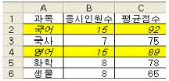
- =AND(B$2>=10,C$2>=80)
- =AND($B2>=10,$C2>=80)
- =AND($B$2>=10,$C$2>=80)
- =AND(B2>=10,C2>=80)
(정답률: 54%)
26. 다음 중 자동 필터와 고급 필터에 대한 설명으로 옳은 것은?
- 자동 필터는 추출 대상을 전체 필드를 대상으로 하지만, 고급 필터는 특정 필드만으로 대상을 제한 할 수 있다.
- 자동 필터는 다른 필드와 AND나 OR 조건으로 결합할 수 있으나, 고급 필터는 AND만 결합 할 수 있다.
- 정렬과 같이 필터는 목록을 다시 배열하여 표시한다.
- 자동 필터는 추출한 결과를 다른 셀이나 워크시트에 표시할 수 있으나, 고급 필터는 원본 데이터 위치에서만 추출할 수 있다.
(정답률: 50%)
27. 다음 중 VBA 주요 명령문에 대한 설명으로 가장 옳지 않은 것은?
- Function … End Function : 사용자정의 함수 만들기
- Sub … End Sub : Sub 프로시저 만들기
- Do While … Loop : 조건을 만족하지 않는 동안 실행하는 제어문
- For … Next : 지정한 횟수만큼 반복하여 실행하는 제어문
(정답률: 55%)
28. 국어, 영어, 수학의 각 점수가 70, 80, 90일 때, 평균이 90이 되기 위한 국어 점수를 구하고자 한다. 다음 중 어떤 기능을 이용하는 것이 가장 적절한가?
- 목표 값 찾기
- 시나리오 분석
- 데이터 통합
- 부분합
(정답률: 70%)
29. 워크시트에서 셀을 편집하거나 메뉴를 선택하여 실행한 결과에 대하여 즉시 실행을 취소하는 기능이 있다. 다음 중 처리 직후에 실행 취소가 불가능한 작업 내용은 어느 것인가?
- 시트 이름을 변경할 경우
- 화면 배율을 변경할 경우
- 셀 서식을 변경할 경우
- 행의 높이를 변경할 경우
(정답률: 47%)
30. 다음 중 차트의 종류에 대한 설명으로 옳지 않은 것은?
- 혼합형 차트 : 값의 차이가 많은 계열이 차트에 포함된 경우에 사용되며 특정 계열을 강조할 때 사용한다.
- 분산형 차트 : 항목의 값을 점으로 표시하여 여러 데이터 값들의 관계를 보여주는데 주로 과학 데이터의 차트 작성에 사용한다.
- 꺾은선형 차트 : 하나의 데이터 계열을 하나의 선으로 표현해 시간에 따른 각 계열의 변화나 추세를 보여 주고자 할 때 작성하며, 3차원 차트로도 작성할 수 있다.
- 가로 막대형 차트 : 개별 항목들을 비교하며 범주는 수평으로 구성되고 값을 수직으로 구성되어, 비교하는 값들을 강조한다.
(정답률: 34%)
31. 다음의 대화상자에서 수행하는 레코드 관리 기능에 대한 설명으로 가장 옳은 것은?
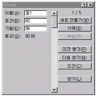
- [조건] 단추를 클릭한 후 이름, 중간, 기말에 조건을 입력할 수 있는데 입력된 조건은 ‘AND’ 또는 ‘OR’로 조건을 선택할 수 있다.
- 평균은 수식으로 입력된 셀이기 때문에, 셀의 내용을 수정할 수 없다.
- 새로 만들기 단추를 누르면 현재 셀에 새로운 데이터를 추가한다.
- 삭제 버튼을 눌러 데이터를 삭제하면 복원 버튼을 눌러 삭제를 취소할 수 있다.
(정답률: 33%)
32. 다음 중 배열 수식에 관한 설명으로 옳지 않은 것은?
- 잘못된 인수나 피연산자를 사용했을 때 “#VALUE!” 에러가 발생한다.
- 빈 칸은 0으로 계산된다.
- 수식을 입력하고 <Ctrl><Shift><Enter>를 누르면 수식의 앞뒤에 중괄호({ })가 자동으로 입력된다.
- 배열식을 사용하여 워크시트에 아직 입력되지 않은 값들의 결과를 구할 수 있으나, 배열식에 상수를 사용할 수 없다.
(정답률: 55%)
33. 다음 중 매크로에 관한 설명으로 가장 옳지 않은 것은?
- 매크로 작성 방법은 ‘새 매크로 기록’과 ‘Visual Basic Editor’를 이용하는 방법이 있다.
- 엑셀에서 이미 사용하고 있는 단축키는 매크로의 바로가기 키로 지정할 수 없다.
- 함수를 이용하거나 값을 입력하는 작업도 매크로로 기록할 수 있다.
- 매크로를 활용하면 자주 사용되는 복잡한 작업을 단순한 명령으로 실행할 수 있다.
(정답률: 68%)
34. 셀 범위 [A1:C4]에 대한 각 보기의 수식을 실행하였을 때 다음 중 결과 값이 다른 것은?
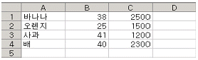
- =INDEX(A1:C4,MATCH(“배”,A1:A4,0),1)
- =INDEX(A1:C4,4,2)
- =INDEX(A1:C4,MATCH(2300,C1:C4,0),2)
- =INDEX(B3:C4,2,1)
(정답률: 44%)
35. 다음 중 데이터 통합에 관한 설명으로 옳지 않은 것은?
- 여러 시트에 있는 데이터나 다른 통합 문서에 입력되어 있는 데이터를 통합할 수 있다.
- 데이터 통합은 위치를 기준으로 통합할 수도 있고, 영역의 이름을 정의하여 통합할 수도 있다.
- [데이터]메뉴의 [통합] 대화상자를 이용한다.
- 위치를 기준으로 데이터를 통합하면 원본 영역의 항목 레이블과 데이터가 대상 영역으로 복사된다.
(정답률: 45%)
36. 다음 중 아래와 같은 조건을 만족하는 사용자 정의 서식으로 옳은 것은?
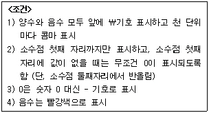
- \#,##0.0;-;[빨강]\#,##0.0
- [빨강]{\#,##0.0};\#,##0.0;-
- \#,##0.0;[빨강]\#,##0.0;-
- \#,##0.0;\-;[빨강]\#,##0.0
(정답률: 48%)
37. 워크시트의 셀 구분선을 그대로 인쇄하려고 한다. 다음 중 설정 방법으로 옳은 것은?
- 페이지 설정 대화상자의 [시트] 탭에서 눈금선을 선택한다.
- 페이지 설정 대화상자의 [페이지] 탭에서 눈금선을 선택한다.
- 페이지 설정 대화상자의 [여백] 탭에서 눈금선을 선택한다.
- 페이지 설정 대화상자의 [머리글/바닥글] 탭에서 눈금선을 선택한다.
(정답률: 51%)
38. 다음 중 [창]-[틀 고정]에 대한 기능 설명으로 가장 옳지 않은 것은?
- 데이터양이 많은 경우, 특정한 범위의 열 또는 행을 고정시켜 셀포인터의 이동과 상관없이 화면에 항상 표시할 수 있도록 하는 기능이다.
- 틀 고정 설정을 원하는 위치에서 마우스를 더블클릭하여 틀 고정을 할 수 있다.
- 화면에 틀이 고정되어 있어도 인쇄에는 적용되지 않는다.
- 틀 고정을 수행하면 셀 포인터의 왼쪽과 위쪽으로 틀 고정선이 표시된다.
(정답률: 62%)
39. 다음 중 [도구]-[보호]-[시트 보호]를 실행하였을 때 보호 대상이 아닌 것은?(제외된 문제, 문제 출제당시 오피스 2003 기준으로 출제되어 현재는 제외된 문제 입니다. 참고만 하세요.)
- 시트 이름
- 시나리오
- 내용
- 개체
(정답률: 35%)
40. 입력된 문자열이 셀의 너비보다 클 경우 입력 문자열의 글꼴 크기를 줄여 한 줄로 셀에 표시되게 하려면 셀 서식에서 어느 항목을 선택해 주어야 하는가?
- 텍스트 줄 바꿈
- 셀에 맞춤
- 셀 병합
- 균등 분할
(정답률: 69%)
3과목: 데이터베이스 일반
41. 다음 그림과 같이 폼의 바닥글 영역에 Format()을 사용하지 않고 함수만 입력하여 시스템의 오늘 날짜와 현재 시간을 텍스트 상자에 표시하려고 한다. 다음 중 함수식으로 옳은 것은?
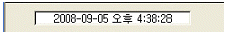
- Today()
- Date()
- Time()
- Now()
(정답률: 60%)
42. 다음 중 보고서와 관련된 내용을 설명한 것 중 틀린 것은?
- 보고서를 이용하면 분기별 결산보고서나 영업실적 같은 보고서를 작성할 수 있다.
- 그룹 머리글/바닥글은 보고서를 그룹으로 묶은 경우에 표시되며 그룹의 이름, 그룹별 요약정보를 표시하기 위한 구역이다.
- 보고서를 이용하여 주소레이블, 우편엽서 레이블, 업무양식, 차트를 작성할 수 있다.
- 보고서 바닥글은 인쇄할 때 보고서의 맨 마지막 쪽의 페이지 바닥글이 인쇄된 다음에 한번만 인쇄된다.
(정답률: 53%)
43. 페이지 번호를 자동으로 출력하고자 한다. 다음 중 결과와 서식이 틀리게 짝지어진 번호는?
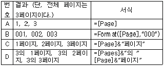
- A
- B
- C
- D
(정답률: 41%)
44. 콤보상자의 행 원본으로 사용된 테이블의 데이터를 수정한 후 그 결과를 반영하기 위한 이벤트 프로시저를 작성하려 한다. 콤보상자의 이름이 ‘Cmb이벤트’일 때 사용할 수 있는 명령문은?
- Cmb이벤트.Requery
- Call Cmb이벤트
- MsgBox “데이터 변경”
- Cmb이벤트.RowSource
(정답률: 50%)
45. 다음 중 액세스에서 매크로에 대한 설명으로 옳지 않은 것은?
- 하나의 매크로 그룹에 여러 개의 매크로를 만들 수 있다.
- 하나의 매크로에 여러 개의 매크로함수를 지정할 수 있다.
- AutoExec이라는 특수한 매크로 이름을 사용하면 테이블이 열릴 때 마다 자동으로 실행된다.
- 매크로 실행시에 필요한 정보, 즉 인수를 지정할 수 있다.
(정답률: 38%)
46. 다음은 레코드 삭제와 관련된 설명이다. 잘못 설명한 사람은?
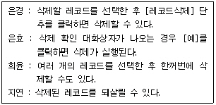
- 은경
- 은효
- 희윤
- 지연
(정답률: 73%)
47. 직원(사원번호, 부서명, 직급, 급여, 이름, 나이, 주소)의 테이블에서 직급별 급여 평균금액과, 총합계가 다음과 같이 출력되기 위한 질의문으로 옳은 것은?
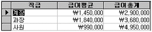
- select 직급, avg(급여)=급여평균, sum(급여)=급여총계 from 직원order by 직급
- select 직급, avg(급여) as 급여평균, sum(급여) as 급여총계 from 직원 order by 직급
- select 직급, avg(급여)=급여평균, sum(급여)=급여총계 from 직원 group by 직급
- select 직급, avg(급여) as 급여평균, sum(급여) as 급여총계 from 직원 group by 직급
(정답률: 36%)
48. 다음 중 데이터베이스의 정규화에 관한 설명으로 가장 옳지 않은 것은?
- 정규화는 중복되는 값을 일정한 규칙에 의해 추출하여 보다 단순한 형태를 가지는 다수의 테이블로 데이터를 분리하는 작업이다.
- 이해하기 쉽고 확장하기 쉽도록 테이블을 구성하며, 무결성 제약조건의 구현을 용이하게 한다.
- 테이블을 정규화하는 경우, 불필요한 필드의 제거로 데이터 공간의 낭비를 방지하여 검색 효율성을 높일 수 있다.
- 정규화를 수행해도 데이터의 중복을 최소화 하는 것이지 완전히 제거할 수 있는 것은 아니다.
(정답률: 37%)
49. 다음 중 인덱스(Index)에 대한 설명으로 옳지 않은 것은?
- 일반적으로 검색을 자주 하는 필드에 대해 인덱스를 설정하는 것이 바람직하다.
- 인덱스를 설정하면 레코드의 조회는 물론 레코드의 갱신 속도가 빨라진다.
- 설정하는 각 인덱스는 필드를 10개까지 사용할 수 있다.
- 인덱스 속성은 아니오, 예(중복 불가능), 예(중복 가능) 중 한 개의 값을 갖는다.
(정답률: 52%)
50. 다음 질의를 수행 한 결과로 가장 옳은 것은?
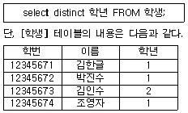
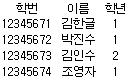
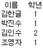
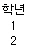
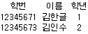
(정답률: 48%)
51. 성적(학번, 이름, 과목, 점수) 테이블에서 점수 필드에 0 이상 100 이하의 값이 입력되도록 범위를 지정하고자 할 때에 사용되는 필드 속성은 어느 것인가?
- 입력 마스크
- 기본값
- 캡션
- 유효성 검사 규칙
(정답률: 56%)
52. 다음 중 조인(join)에 대한 설명으로 옳지 못한 것은?
- 두 개 이상의 테이블로부터 원하는 데이터를 검색하는 방법이다.
- 조인에 사용되는 기준 필드는 동일하거나 호환되는 데이터 형식을 가져야 한다.
- 조인되는 두 테이블의 필드 수가 동일할 필요는 없다.
- 관계가 설정되지 않은 두 테이블은 조인을 수행할 수 없다.
(정답률: 44%)
53. 보고서에서 합계를 구하기 위해서 Sum 함수를 이용하여 표시하려고 한다. 다음 중 합계를 표시하기에 적절하지 않은 영역은?
- 보고서 바닥글
- 그룹 바닥글
- 페이지 바닥글
- 보고서 머리글
(정답률: 32%)
54. 텍스트 상자 컨트롤에 다음과 같은 식을 입력하였다. 다음 식에 대한 설명으로 옳은 것은?
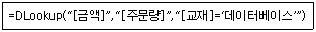
- 금액 테이블에서 데이터베이스 교재의 주문량
- 금액 테이블에서 데이터베이스 교재의 주문량과 금액
- 주문량 테이블에서 데이터베이스 교재의 주문량
- 주문량 테이블에서 데이터베이스 교재의 금액
(정답률: 50%)
55. <수강> 테이블의 ‘수강학생’ 필드는 <학생> 테이블의 ‘학번’ 필드를 참조한다. 다음 중 참조 무결성 규칙을 위반한 작업은?
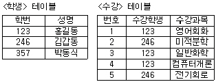
- <학생> 테이블에 ‘학번’과 ‘성명’에 각각 ‘468’과 ‘김해성’인 레코드를 추가했다.
- <수강> 테이블의 ‘수강학생’ 필드에 ‘987’, ‘수강과목’ 필드에 ‘물리실험’을 추가했다.
- <수강> 테이블에서 첫번째 레코드의 ‘수강학생’ 필드값을 ‘123’에서 ‘357’로 변경했다.
- <학생> 테이블의 ‘학번’ 필드 ‘357’에 해당하는 레코드에서 ‘성명’ 필드의 ‘박동식’을 ‘이황’으로 변경했다.
(정답률: 44%)
56. 다음 보기의 SQL문의 의미를 설명한 것이다. 바르게 설명한 것은?
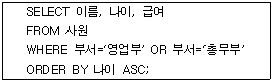
- ORDER BY 절의 ASC는 내림차순으로 정렬하라는 것으로 지정하지 않아도 동일한 결과를 초래한다.
- ‘사원’ 테이블에서 부서가 영업부이거나 총무부인 사원의 이름, 나이, 급여를 검색한 후 나이를 기준으로 내림차순 정렬된 결과를 조회한다.
- WHERE절은 WHERE 부서 IN (‘영업부’, ‘총무부’)와 같이 지정해도 동일한 결과를 조회한다.
- ‘사원’ 테이블에서 영업부와 총무부를 제외한 사원의 이름, 나이, 급여를 검색한 후 나이를 기준으로 오름차순 정렬된 결과를 조회한다.
(정답률: 55%)
57. 다음 중 하위 폼에 관한 설명으로 가장 옳지 않은 것은?
- 기본 폼안에 여러 개의 하위 폼을 배치할 수 있다.
- 기본 폼은 단일 폼과 연속 폼으로 표시할 수 있으나, 하위 폼은 단일 폼으로만 표시할 수 있다.
- 기본 폼과 하위 폼은 서로 연결이 되어 있는 경우, 하위 폼에는 기본 폼의 현재 레코드와 관련된 레코드만 저장된다.
- 하위 폼을 사용하면 일대다 관계에 있는 테이블을 효과적으로 표시할 수 있다.
(정답률: 60%)
58. 다음 중 기본 폼과 하위 폼에 대한 설명으로 가장 옳지 않은 것은?
- 마침표(.)를 구분자로 이용하여 여러 필드를 기준으로 연결할 수 있다.
- 기본 필드와 하위 필드의 데이터 종류는 반드시 같거나 호환되어야 한다.
- 하위 폼이 들어 있는 폼에서 새 레코드를 입력하는 경우 하위 폼에 데이터를 입력할 때는 현재 레코드가 기본 폼에 저장된다.
- ‘하위 폼 필드 연결기’ 창에서 한꺼번에 기본 폼과 하위 폼의 연결 필드를 지정할 수 있다.
(정답률: 38%)
59. 다음 중 폼의 컨트롤에 대한 설명으로 가장 적절치 않은 것은?
- 여러 컨트롤을 선택하여 한꺼번에 동일한 속성을 지정할 수 있다.
- 여러 컨트롤을 그룹화하여 사용할 수 있다.
- [Ctrl] 키를 이용하여 여러 개의 컨트롤을 선택할 수 있다.
- 여러 컨트롤을 선택하여 한꺼번에 위치를 이동할 수 있다.
(정답률: 32%)
60. 다음 중 테이블에 데이터가 입력되는 방식을 제어하는 방법으로 가장 옳지 않은 것은?
- 유효성 검사 규칙을 정의하여 필드에 입력되는 데이터를 제한할 수 있다.
- 입력 마스크를 이용하여 필드의 각 자리에 입력되는 값의 종류를 제한할 수 있다.
- 색인(index)을 이용하여 해당 필드에 중복된 값이 입력되지 않도록 할 수 있다.
- 기본 키(PK) 속성을 이용하여 레코드 추가시 입력되는 기본 값을 사용자 임의로 지정할 수 있다.
(정답률: 42%)
1. 시스템 BIOS가 실행되어 하드웨어를 검사하고, 부트 디바이스를 찾는다. (c)
2. 부트 디바이스에서 MBR(Master Boot Record)을 찾아 실행한다. (d)
3. MBR은 부트로더(Boot Loader)를 찾아 실행한다. (b)
4. 부트로더는 운영체제를 찾아 실행한다. (a)
따라서, c - d - b - a 순서대로 부팅 과정이 진행된다.